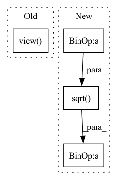

Pattern ID :31104

Before Change
// * kernel: [batch_size, particle_num, particle_num]
kernel_mean = kernel.mean(-1).max(-1)[0]
scale_list = list(np.linspace(min_scale, max_scale, kernel_num))
bandwidth_list = [(kernel_mean * scale).view(-1, 1, 1).detach() for scale in scale_list]
return bandwidth_list
After Change
set1_centre = set1.mean(-1).view(-1, 1)
set2_centre = set2.mean(-1).view(1, -1)
distance = (set1_centre - set2_centre).pow(2).pow(0.5).max(-1)[0].max(-1)[0]
delta_list = [distance / np.sqrt(2 * (i + 1)) for i in range(kernel_num)]
bandwidth_list = [((2 * delta ** 2)).detach() for delta in delta_list]
return bandwidth_list
In pattern: SUPERPATTERN
Frequency: 3
Non-data size: 4
Instances
Fragment ID: 91410338
Project Name: deligentfool/dqn_zoo
Commit Name: 23f02caeca29f856c16efb0b1f26b0bfbf15efe9
Time: 2020-10-28
Author: 1027660817@qq.com
File Name: MMD_DQN/mmd_dqn.py
M Class Name: AnonimousClass
N Class Name: AnonimousClass
M Method Name: calc_bandwidth(3)
N Method Name: calc_bandwidth(4)
M Parent Class:
N Parent Class:
M File Name: MMD_DQN/mmd_dqn.py
N File Name: MMD_DQN/mmd_dqn.py
M Start Line: 10
M End Line: 14
N Start Line: 32
N End Line: 39
'>
Before Change
batch_size, embedded_dims, n_bins, n_frames = input.size()
batch_size, n_sources, n_bins, n_frames = target.size()
input = input.view(batch_size, embedded_dims, n_bins * n_frames)
target = target.view(batch_size, n_sources, n_bins * n_frames)
input_transposed = input.permute(0, 2, 1).contiguous() // (batch_size, n_bins * n_frames, embedded_dims)
target_transposed = target.permute(0, 2, 1).contiguous() // (batch_size, n_bins * n_frames, n_sources)
After Change
YY = torch.bmm(Y, trans_Y) // (batch_size, n_samples, n_samples)
YY1 = YY.sum(dim=-1) // (batch_size, n_samples)
D = torch.diag_embed(1 / torch.sqrt(YY1 + eps)) // (batch_size, n_samples, n_samples)
VD, YD = torch.bmm(trans_V, D), torch.bmm(trans_Y, D) // (batch_size, embed_dim1, n_samples), (batch_size, embed_dim2, n_samples)
VDV, YDY = torch.bmm(VD, V), torch.bmm(YD, Y) // (batch_size, embed_dim1, embed_dim1), (batch_size, embed_dim2, embed_dim2)
VDY = torch.bmm(VD, Y) // (batch_size, embed_dim, embed_dim2)
'>
Fragment ID: 91410355
Project Name: tky823/dnn-based_source_separation
Commit Name: 8860d8d92de4ba4390fa89247619810b0c821fe6
Time: 2021-11-22
Author: delta9guitar97@gmail.com
File Name: src/criterion/deep_clustering.py
M Class Name: AffinityLoss
N Class Name: AffinityLoss
M Method Name: forward(4)
N Method Name: forward(4)
M Parent Class: nn.Module
N Parent Class: nn.Module
M File Name: src/criterion/deep_clustering.py
N File Name: src/criterion/deep_clustering.py
M Start Line: 19
M End Line: 34
N Start Line: 26
N End Line: 37
'>
Before Change
x_p = torch.sigmoid(self.beta * x_normed)
print(x_p.shape)
output = (1.0-x_p) * x_ * self.alpha + x_p * x_
output = output.view(*x.shape)
return output
// class FeedForwardAttention(torch.nn.Module):
// def __init__(self, q_dim, k_dim, mlp_layers=None, activation_func="relu") -> None:
After Change
def forward(self, x):
mean_x = torch.mean(x, dim=-1, keepdim=True)
var_x = torch.var(x, dim=-1, keepdim=True)
x_std = (x - mean_x) / (torch.sqrt(var_x + self.epsilon))
p_x = torch.sigmoid(x_std)
f_x = p_x * x + (1-p_x) * x * self.weight.expand_as(x)
return f_x
'>
Fragment ID: 91410352
Project Name: ustcml/recstudio
Commit Name: 41eaf8d3306045061591f4cd83d488cbd9afb1ed
Time: 2022-08-21
Author: angus_huang@mail.ustc.edu.cn
File Name: recstudio/model/module/layers.py
M Class Name: Dice
N Class Name: Dice
M Method Name: forward(2)
N Method Name: forward(2)
M Parent Class: torch.nn.Module
N Parent Class: torch.nn.Module
M File Name: recstudio/model/module/layers.py
N File Name: recstudio/model/module/layers.py
M Start Line: 337
M End Line: 343
N Start Line: 390
N End Line: 395